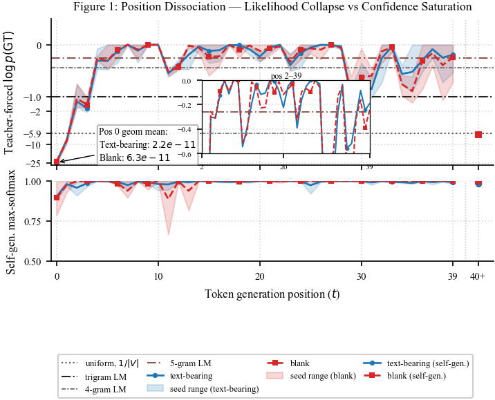
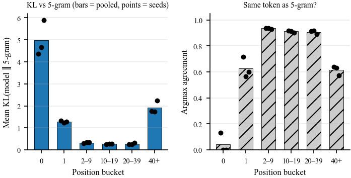
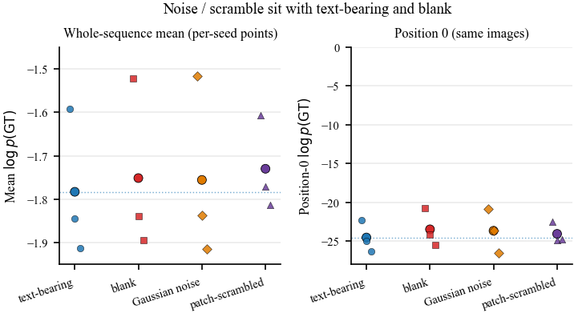
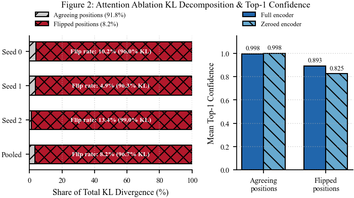
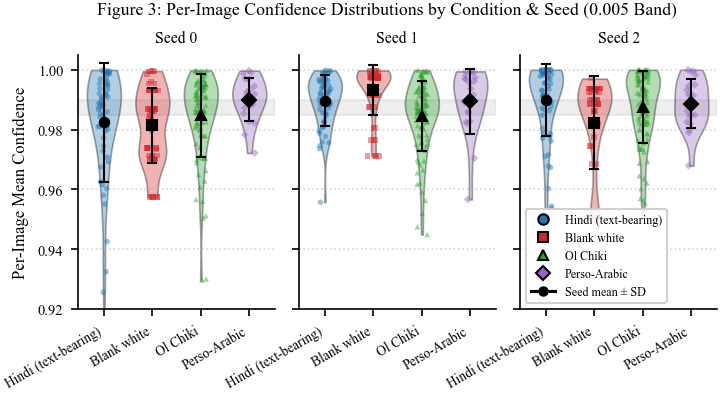
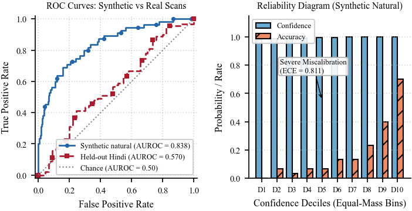

When a document OCR system is unsure, pipelines often send that prediction to a human. That only works if the system’s confidence actually tracks whether it is reading the page. This project asks whether it does, on a small model we can open up — not on a closed API. The PDF is canonical; this page is a reading aid.
Sarvam Vision already publishes that some Indic languages are much harder for OCR than others. If Extract confidence were a useful review signal, it should fall on the languages the same bench calls hard. This tab asks whether it does. The PDF does not name this product; the mechanism work lives on the Paper tab.
A production vision–language model has already seen Indic text. If it transcribes a page, you cannot tell whether the pixels did the work or a language prior did. So this project trains a small encoder–decoder with no Indic pretraining, then probes it.
About 19.6 million parameters, grapheme-cluster vocabulary of 367 symbols, 2,538 Hindi line crops, three independent seeds. Scoring applies encoding equivalence before residual error is counted. Evaluation images are GlotOCR renders, not photographs. The model was trained on the full manifest: 19 of 60 teacher-forced evaluation strings appear as training lines. That can only have helped position 0; it still fails there. Mid-sequence likelihood and the synthetic ranking result below are not held-out-string results.
Pipeline
GlotOCR pages → Tesseract / Surya / PaddleOCR (encoding-aware scores)
→ renderer → train.py → probes → paper figures
The failure is localised at generation position 0 — the first symbol, before any prefix the model wrote itself. Under teacher forcing, the geometric-mean probability of the correct first symbol is 2.2×10⁻¹¹ on text-bearing images and 6.3×10⁻¹¹ on blank: more than eight orders of magnitude below a text-only n-gram that never sees an image (19.8 nats). We do not compare this to a uniform vocabulary prior; the decoder is peaked, not uniform. The median rank of the correct symbol among 367 candidates is 70.5, with 35.0% of sequences ranking it below position 100. Ground truth is never the argmax (0 of 180 sequences). Self-generated max-softmax confidence at that same step is still approximately 0.90.

From position 2 to 39, teacher-forced log probability sits in the same band as a 4- to 5-gram. A distributional check, replicated on three seeds, supports treating that as more than a mean match. Pooled KL divergence (model versus 5-gram) at positions 2–9 / 10–19 / 20–39 is 0.32 / 0.27 / 0.28 nats, with argmax agreement 93.5% / 91.2% / 90.7%. At positions 0, 1, and 40+ both KL and agreement move the other way. We regard the exclusive claim as supported.

We ran Gaussian-noise images and patch-scrambled real images — visual variation of any kind, not only blank versus text. Pooled whole-sequence mean log p(GT) is −1.756 on noise and −1.730 on scrambled, against −1.783 text-bearing and −1.751 blank: all four within 0.05 nats. Position 0 still collapses (−23.7 noise, −24.1 scrambled). Pure noise has no structure a domain-shift account would expect the model to treat differently from a familiar-but-shifted rendering. This is evidence for bypass over domain shift, not proof: an instrument that never learned to use images under any condition is consistent with both a total bypass failure and a domain-shift failure severe enough to leave no residual sensitivity to any visual input at all.

Deleting encoder memory changes the output distribution (mean KL 1.075 nats; argmax flips at 8.2% of decoding steps) but leaves the peak near unity: 96.7% of the divergence sits at those flipped positions, while agreeing positions retain mean confidence 0.998. The scalar used as confidence is the part ablation does not move.

On synthetic lines drawn entirely from the training manifest, the model attains 18.3% line accuracy. Confidence ranks correct versus incorrect transcriptions at AUROC 0.838, while remaining badly miscalibrated at mean confidence 0.994 (ECE ≈ 0.81). On held-out images, accuracy is zero and the signal carries no usable correctness information.
All 300 Probe 5 evaluation instances (100 strings × 3 seeds) are sampled from the training manifest. There is no non-matching subset. The memorisation-versus-correctness split cannot be run on this evaluation set. The 0.838 figure is an in-training-manifest result, not evidence of generalisation. A confidence signal that ranks memorised successes highly may be tracking memorisation rather than correctness; the two hypotheses produce the same AUROC here by construction.


Because visual dependence is concentrated at the start of the sequence, a confidence score averaged uniformly over generated tokens dilutes the one position that carries it.
Testing whether AUROC tracks correctness rather than memorisation needs synthetic lines whose text is withheld before training. That is new rendered data, not a re-analysis of Probe 5 and not new GPU training for the split itself.
A positive control on a system that reads Devanagari remains open. Surya v0.22 has no exposed softmax. PaddleOCR’s Hindi recognition head is CTC, not autoregressive: there is no teacher-forced p(gᵢ | g₍ᵢ, image) to extract. Both candidates failed for architecture, not for lack of trying.
On 35 cached Extract pages the Hindi–Kashmiri published word-accuracy gap is 39.98 percentage points; Extract confidence moves by 0.0027. Blank pages score 0.0000, so the channel can go to zero — it just does not on the scripts the same bench calls hard. Digitise does not expose this field; the probe uses Extract on purpose.
| Language | Published accuracy | Extract confidence (n=10) |
|---|---|---|
| Hindi | 95.91 | 0.9997 |
| Santhali | 80.32 | 0.9974 |
| Kashmiri | 55.93 | 0.9970 |
| Blank | — | 0.0000 |
Write-up: docs/sarvam_vision_confidence.md. The next section asks whether the owned instrument’s rankings help on the same production pages.
The Extract numbers above are a product question. To ask why a decoder can be sure without reading, we trained a ~19.6M reader from scratch (no Indic pretraining) so we can blank the page, zero the encoder, and teacher-force the true first grapheme.
That instrument does not read its held-out images. That is what makes the first-token test interpretable: there is no hidden reading skill, only a language prior that is still about 0.90 confident while the probability of the correct symbol is about 10⁻¹¹. Switch to the Paper tab for the full position-resolved result, including noise and scramble, n-gram KL, and the memorisation finding. The PDF does not name this product.
Interactive check · synthetic Probe 3
These three tiles replay mean confidence on synthetic natural lines, not held-out pages. If vision mattered, blank and noise should drop. On this instrument they barely do. Held-out character-error rate is still about 1.
The gap above is about Extract confidence vs published language accuracy. A natural follow-up uses the same production pages plus the owned instrument: does the instrument’s own difficulty ranking predict Sarvam’s per-image error, and does its confidence help choose which pages to escalate?
On 60 Hindi plains, the pre-registered Stage 5b test (Spearman, permutation null locked before looking) finds essentially no transfer: ρ = 0.029, p = 0.827. That is a genuine null, not an inconclusive run. At the fair Stage 6 slice — escalate 20% of those pages (k=12) — routing by instrument confidence leaves residual system CER 0.0109, which is worse than random (0.0095) and clearly worse than Tesseract confidence (0.0079).
Both negatives cohere with the Paper-tab story on production data: a confidence signal that is not visually grounded also does not predict real-world difficulty or improve real-world triage. The PDF still does not name this product; these numbers live only on this Extract tab and in the project book.
Budget honesty: 36 of 110 new Extract calls failed with HTTP 402 (insufficient credit), all in the Hindi-degraded arm after plains finished. That leaves the degraded secondary at n=24 instead of the pre-registered n=60, and Santhali/Kashmiri exploratory arms stay n=10. Failed rows were excluded from every statistic (explicit error field — not a fake zero). Full budget would have bought power, not a known result; do not treat those underpowered arms as confirmed nulls the way the n=60 primary is.